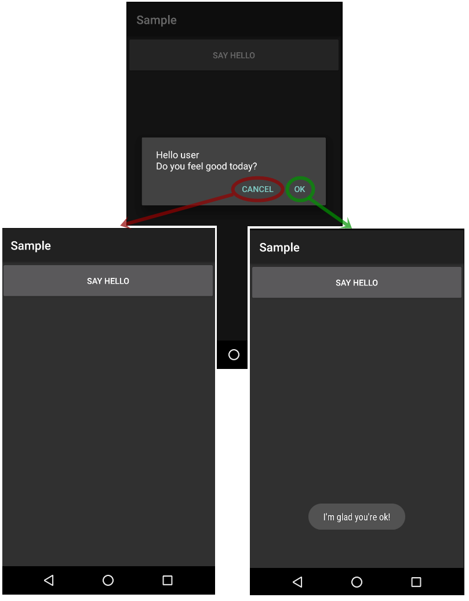

Displays a message that allows capturing end user confirmation.
Confirm( Message ) : Boolean
Where:
Message
The message to be displayed. It can be constant or stored in a variable. It is possible to add newlines in the string.
Boolean
It returns if the end user has confirmed or not. Its value can not be captured. In case that end user cancels the operation, the composite block is aborted (It does not continue with the next line of execution).
If your want to capture its value, you must use Interop Confirm method.
Type Returned:
Boolean
Objects: Panel, Work With for Smart Devices
Generators: Apple, Android, .NET,
Java
Event 'Say hello'
Composite
&Message = "Hello user" + Newline() + "Do you feel good today?"
Confirm(&Message)
Msg("I'm glad you're ok!",nowait)
EndComposite
Endevent
In case that end user press "ok" button, it will display the message. Otherwise, no message will be displayed.

| Backlinks |
| HowTo: Formatting plain text programmatically |